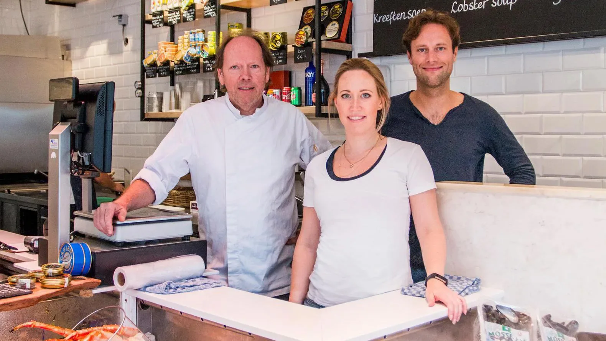

Award-winning visrestaurant
van familie De Visscher
van familie De Visscher
Met De Visscher als achternaam opende Fons in 1984 zijn viswinkel in Helmond, geliefd bij Brabanders uit de verre omstreken. In 2012 opende hij zijn eerste visrestaurant, The Seafood Bar, aan de Van Baerlestraat. Met behulp van zijn zoon en dochter groeide dit uit tot een instituut met lange wachtrijen.

Ons visrestaurant staat bekend om zijn uitstekende kwaliteit en service. Of je nu zin hebt in een lichte lunch of een uitgebreide maaltijd, bij The Seafood Bar ben je aan het juiste adres. Met een breed scala aan visgerechten bereid met de meest verse ingrediënten, streven we ernaar om de beste culinaire ervaring te bieden in een sfeervolle ambiance.
Bezoek een van onze visrestaurants in Amsterdam Centrum, Amsterdam Zuid, Amsterdam De Pijp, Utrecht naast het station of Soho, Londen en ontdek waarom wij het beste visrestaurant zijn voor lunch en diner. The Seafood Bar, waar kwaliteit en vakmanschap samenkomen, is dé plek voor visliefhebbers.
Duurzame vis vinden we belangrijk. Vis eten is heerlijk maar alleen zolang de visstanden gezond blijven en we onze mooie planeet in balans houden.
Hoe doen ze wat? We selecteren samen met leveranciers zorgvuldig de beschikbare vis en werken uitsluitend met innovatieve en duurzame visserijen.